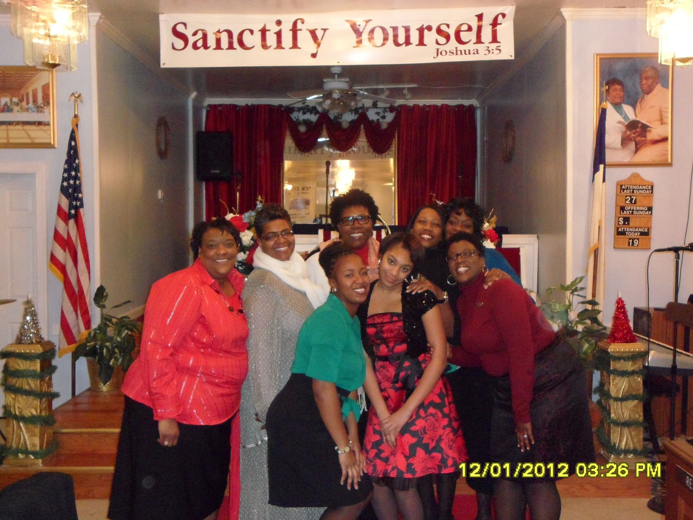
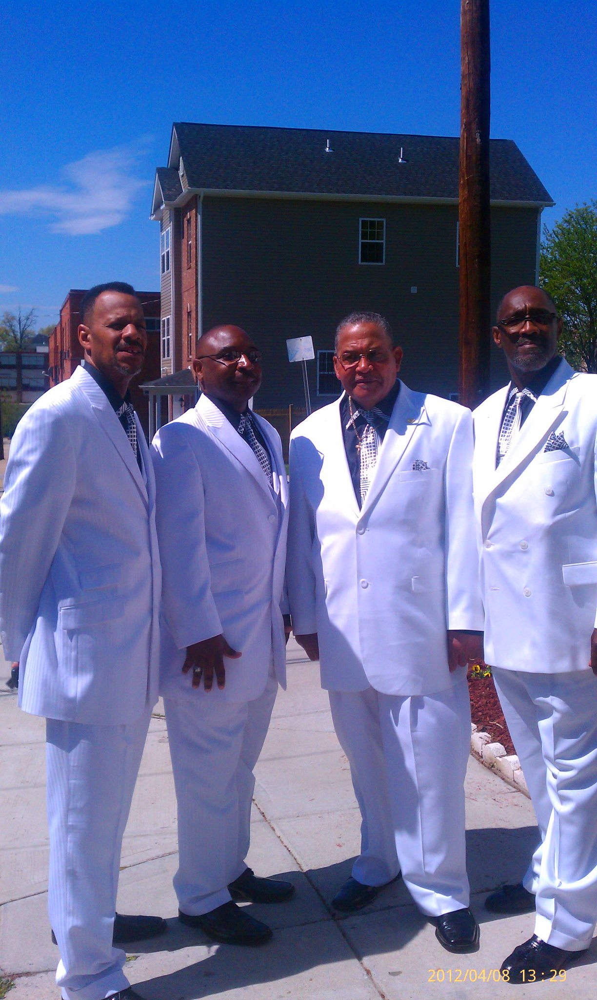
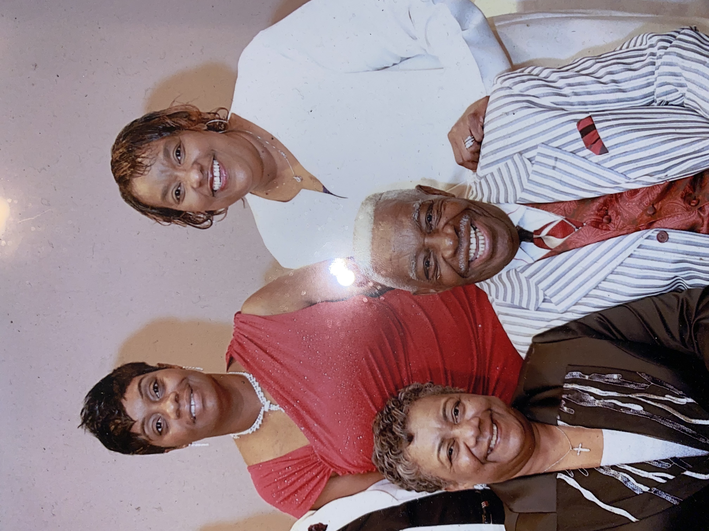
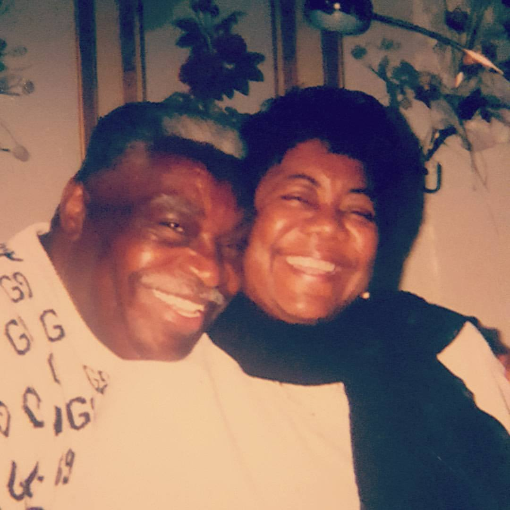
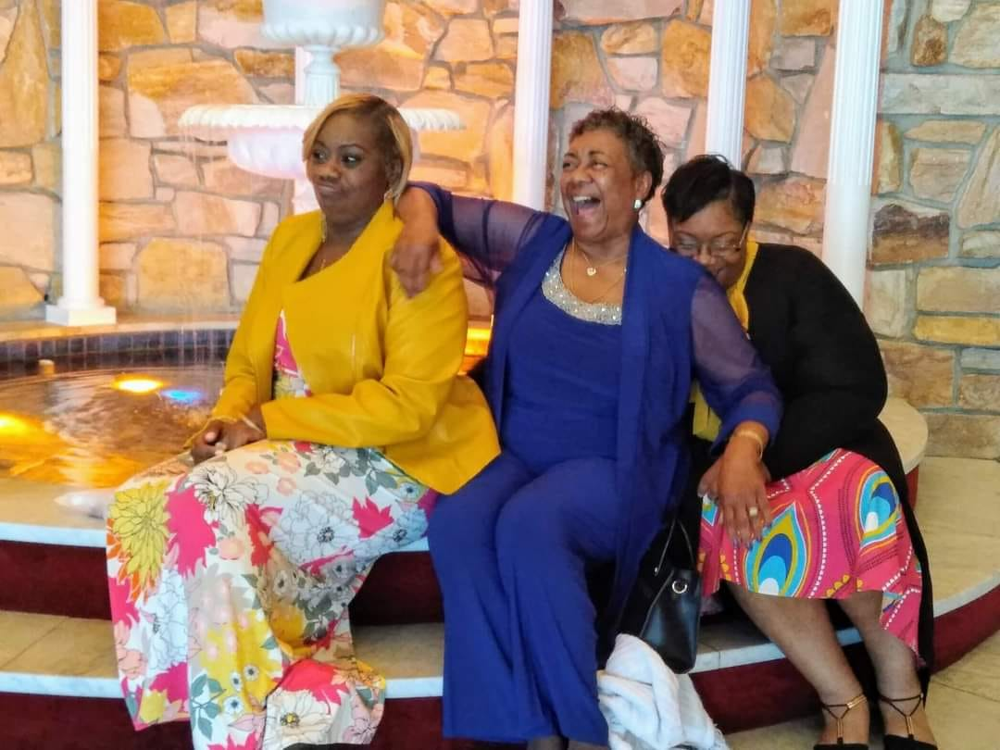
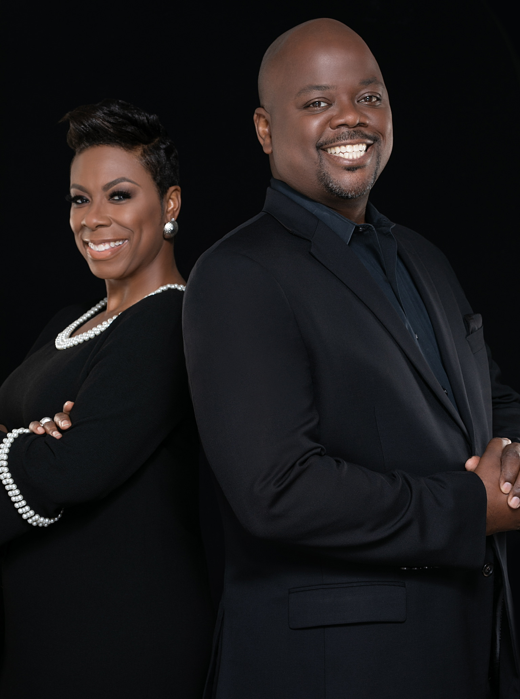
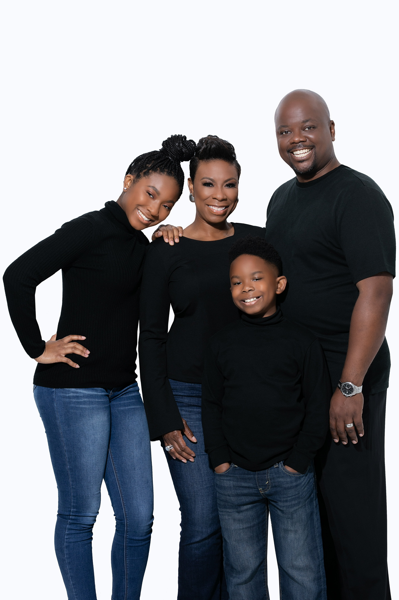

From a school cafeteria in 1983 to the sanctuary on Call Place SE today, New Zion's story has been carried forward by three faithful shepherds. This is that story, so the family can remember, and so we can keep building.
“One generation shall commend your works to another, and shall declare your mighty acts.”Psalm 145:4

Founder & First Senior Pastor
New Zion Baptist Church exists because of the vision, faith, and tireless labor of Pastor Alphonse Certain, Jr., a man who heard God's call and answered it without hesitation. In 1983, under his leadership, a congregation gathered for the first time at Thomas Claggett Elementary School in Forestville, Maryland, and New Zion Baptist Church was born.
For over three decades, Pastor Certain shepherded this congregation with wisdom, determination, and a servant's heart. In 2017, the Lord called him home. His fingerprints remain on everything New Zion is today.
A congregation gathered for the first time at Thomas Claggett Elementary School in Forestville, Maryland. A congregation, a calling, and a covenant were established.
Guided by the Holy Spirit, the congregation moved to a site in Landover, Maryland. Pastor Certain and the faithful members labored together to transform it into a beautiful temple of God.
After more than three decades of founding, building, and shepherding New Zion, Pastor Certain's earthly work was done. His legacy of faithfulness continues to this day.
A place for the family to see where we started.




Pastor Alphonse Certain, Jr. and his wife, Rev. Major L. Certain, partners in ministry from the very beginning.
Senior Pastor
Pastor Alphonse Certain's wife, Rev. Major L. Certain, was licensed into the Gospel Ministry, beginning her own journey of faithful service alongside her husband and this congregation. When the Lord called Pastor Certain home in 2017, Rev. Major L. Certain, who had been serving as Assistant Pastor, stepped forward to lead the congregation, and was later formally installed as Senior Pastor.
She is a mighty woman of God who loves the Lord with all her heart, mind, and soul, whose desire has always been that people get to know God's Word in their minds, store it in their hearts, show it in their lives, and demonstrate it to the world.


Rev. Major L. Certain with her daughters.

Incoming Senior Pastor
Rev. Lloyd Parker, Jr. and his wife Tanaia answered the call to serve at New Zion, Tanaia's childhood church, joining as members before Rev. Parker began serving as Assistant Pastor and weekly Wednesday Bible Study teacher.
New Zion now looks toward its next chapter, as Rev. Parker prepares to be installed as Senior Pastor, carrying forward the foundation laid by Pastor Alphonse Certain and continued by Rev. Major L. Certain, into a new season of ministry.

Rev. Parker with his wife, Tanaia.

Rev. Parker with his family.
Every generation at New Zion has built on the faithfulness of the one before it. Come see what God is doing here now.